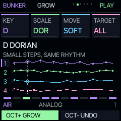
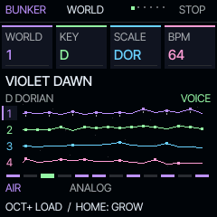
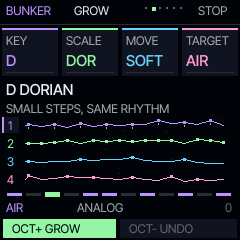
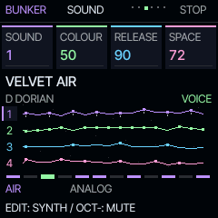
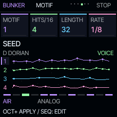
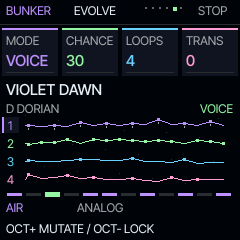
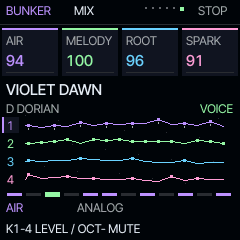

THE FIELD GUIDE / RELEASE 1.0
Find a phrase.
Follow it.
Start with the six Bunker pages. Go deeper with the FM-1's dedicated editor buttons whenever you want.
Your first two minutes
- Turn the master volume down, connect headphones or speakers, then press PLAY. On a fresh start, Violet Dawn is ready. A restored project may contain different music.
- ALGORITHM selects AIR, MELODY, ROOT or SPARK. These are roles, not fixed engines.
- HOME cycles WORLD → GROW → SOUND → MOTIF → EVOLVE → MIX. SELECT also changes pages. From another editor, HOME first returns to WORLD.
- On SOUND, turn PRESETS or KNOB 1 to load one of the selected layer's sixteen sounds. KNOB 2 changes colour, KNOB 3 release, KNOB 4 reverb.
- To try another world: stop playback, choose it on WORLD with PRESETS or KNOB 1, then press OCT+. This replaces the composition, so save anything you want to keep.
The four fields at the top of the display correspond to KNOB 1–4. MASTER always controls the output level. On the advanced Felucca editors, the encoders retain those editors' functions.
THE EASY MELODIC TOOL
GROW, one step at a time
- From WORLD press HOME once. Select a track with ALGORITHM.
- KNOB 1: choose the root note.
- KNOB 2: choose the scale.
- KNOB 3: choose TUNE, SOFT, FLOW or NEW.
- KNOB 4: choose ONE or ALL melodic tracks.
- OCT+: apply. OCT−: undo the last GROW.

| Style | What changes |
|---|---|
| TUNE | Fits existing notes to the chosen root and scale. |
| SOFT | Small changes by neighbouring scale degrees. |
| FLOW | More frequent and wider melodic movement. |
| NEW | A fresh variation over the existing rhythm. Creates a sparse motif if the track is empty. |
Knob choices are a draft until OCT+ is pressed. Sounds, levels, note lengths and existing rhythm remain intact. DRUM and SLICE tracks are skipped. The selected notes fit the scale and are kept in MIDI range 24–108.
GROW also works during playback. It sets the affected tracks to LOCK so you can compare the phrase without further automatic changes. Return to EVOLVE to enable ongoing movement again.
Undo restores one complete GROW operation, including the previous scale and evolution mode. A newer GROW replaces this undo point. If you edit the affected phrase elsewhere, an older undo is refused to protect newer work. Undo history is lost on restart. GROW is unavailable during recording or a running song chain.
The six pages






| Page | KNOB 1 | KNOB 2 | KNOB 3 | KNOB 4 |
|---|---|---|---|---|
| WORLD | Choose world | Global root | Global scale | Tempo 30–180 |
| GROW | Draft root | Draft scale | Style | ONE / ALL |
| SOUND | Load sound | Engine colour | Release | Reverb send |
| MOTIF | Choose template | Density 1–16 | Length 1–64 | Step rate |
| EVOLVE | Mode | Chance 0–100% | Every 1–32 loops | Key transpose* |
| MIX | AIR level | MELODY level | ROOT level | SPARK level |
WORLD: choose a world, stop, then OCT+ to load. Root and scale change the notes of all tracks immediately. Repeated quantisation is not reversible; use GROW with undo for comparisons or reload a saved project.
MOTIF: OCT+ applies the chosen template and density, replacing the selected track's notes. Length and rate change immediately. Density is the number of distributed hits per sixteen steps. The template name shows your next selection, not an analysis of an edited or restored pattern.
OCT−: mutes the selected track on WORLD, SOUND, MOTIF and MIX. On SOUND and MIX, OCT+ also toggles mute. On GROW it means UNDO; on EVOLVE it means LOCK.
*Key transpose: EVOLVE's fourth knob changes the shared keyboard transpose parameter. In the default SCL → QUANT = SEQ mode it affects live keys, not stored sequence playback. Choose SEQ+T on SCL to transpose sequence playback too. For a simple, permanent scale-based sequence change, use GROW → TUNE.
Let the pattern develop
| Mode | Behaviour |
|---|---|
| LOCK | No automatic note changes. Envelopes, modulation and effect tails continue. |
| WALK | Moves an existing hit by a neighbouring scale degree, keeping its chord together. |
| ANSWER | Copies pitches from another step in the phrase, or moves to a neighbouring note. |
| ORBIT | Rotates the complete pattern by one step. |
| MIRROR | Swaps two complete steps. |
| BLOOM | Moves a hit into a rest, or moves a note upward when that place is occupied. |
| BREATH | Varies velocity and step probability within bounded ranges. |
| VOICE | Moves one chord tone by an octave while preserving its pitch class. |
CHANCE is the probability of a change after each chosen number of LOOPS. It is not the probability of every note. For an obvious demonstration, choose WALK, 100%, one loop; or press OCT+ for one immediate step. A random operation may sound unchanged, for example when swapping two rests.
OCT− locks the current pattern. Evolution pauses during recording and song-chain playback, and excludes DRUM tracks. Notes and evolution settings are saved; the random generator state is not, so the later path may differ after restarting.
The display shows real track notes, coloured playhead diamonds and the chosen scale. Hold HOME → DISPLAY → ANIM to disable decorative movement. The animation does not control the music.
Edit individual notes and chords
- Select a track with ALGORITHM. On EVOLVE, press OCT− to lock it.
- Stop playback and press SEQ for STEP. KNOB 1 selects the step; KNOB 2 transposes its note or chord; KNOB 3 changes length; KNOB 4 changes accent/slide.
- To enter notes, enable REC on the stopped STEP page and press a key. Releasing advances to the next step. Hold several keys together for a chord. Turn REC off when finished.
- Press SEQ again for DETAIL: chance, ratchets, timing offset and velocity. The next page contains automation.
- Press PLAY. Re-enable a mode on EVOLVE when you want the phrase to continue changing.
The 32 scales are pitch collections in twelve-tone equal temperament, not microtonal tunings. SCL can set the scale independently per track.
Go deeper into the sound
| Button | Opens |
|---|---|
| EDIT | Engine parameters, including detailed FM6 editing. |
| ENV | Attack, decay, sustain, release and envelope controls. |
| LFO | Modulation settings and the modulation matrix. |
| FX | Insert effects, chorus, delay and reverb. Hold for the performance layer. |
| SCL / ARP | Scale, quantisation, chord tools / arpeggiator. |
| GLO | Global settings and, when held, the existing quick functions. |
| SAVE | User sounds, factory presets, phrases, projects and tools. |
The original Felucca documentation is included in the source archive. This guide describes Bunker's changed HOME pages. To return from another home view, hold HOME → DISPLAY → HOME → BUNKER.
Keep what you make
Stop playback. Press SAVE until PROJECT appears. KNOB 1 selects slot A–D; KNOB 4 selects SAVE; press OCT+. Confirm any overwrite and name dialogue. Choose LOAD on the same page to return to it. SAVE → USER offers 32 user sound slots.
For an external Bunker backup, use Back up your music on the installer while the device is stopped. Restore it only to compatible Bunker firmware. Autosave is helpful, but it is not an external backup.
This release uses the Bunker 114-parameter project format. Other firmware projects are not converted. Felucca 1.6.1 cannot load Bunker's 114-parameter projects. A firmware rollback does not bring back overwritten music.
A little room to breathe
The four tracks share eight voices. Long releases and dense chords may steal voices. The inherited overload protection fades a voice after repeated overloaded blocks. The watchdog remains active; the experimental second CPU core is disabled in this build.
For dense textures, try two or three notes per chord, fewer simultaneous hits and shorter releases. The browser runs the real DSP, but it cannot measure the FM-1 chip's timing margin or test its USB and flash hardware.
Play without hardware
Open the browser instrument, click Power on, then PLAY. Drag knobs or use the mouse wheel. Keyboard shortcuts are shown below the panel. The wide layout follows the FM-1 panel; the phone layout rearranges controls for readability.
The simulator needs an AudioWorklet at 44.1 kHz. Its projects stay in this browser's local storage and are not automatically transferred to hardware. Close it and other MIDI applications before flashing a device.